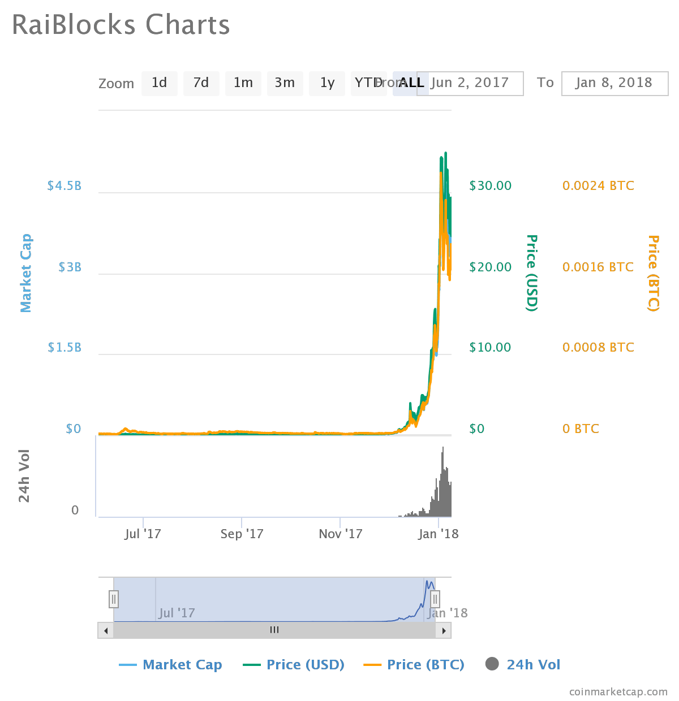
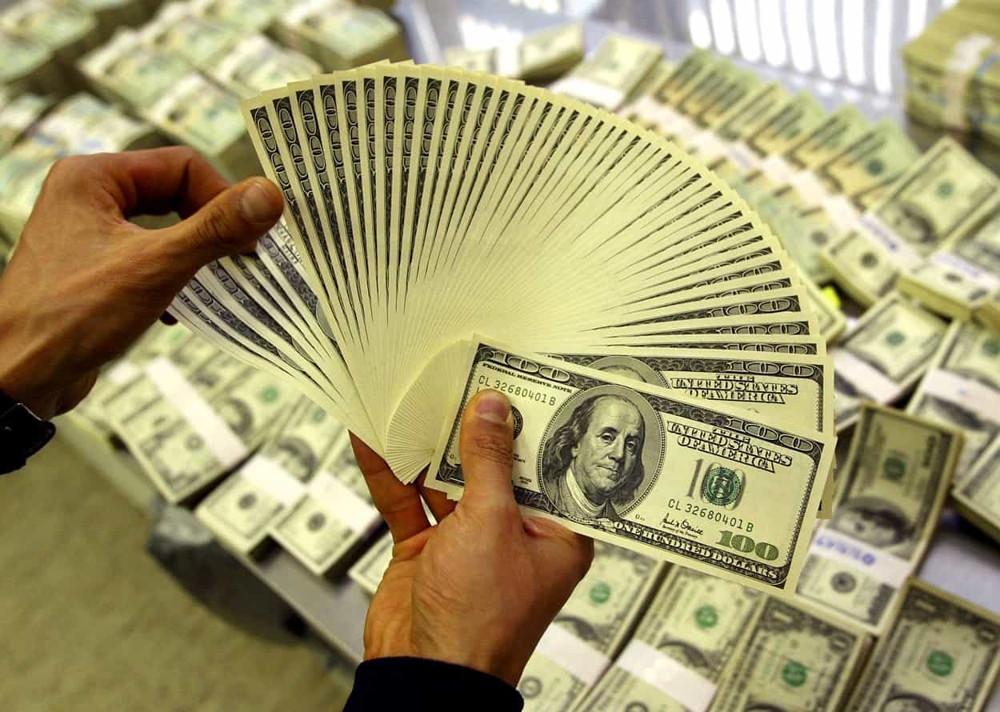

G-Freedom is an oilfield technician, writer and explorer. When not off somewhere new he's thinking, in the gym, or writing on www.artofselfhood.com


A quick look around the Internet will tell anyone paying attention that something is going on. Something big. Just a couple of years back, hardly anyone had heard of cryptocurrency, and even fewer were investing in any crypto projects. That seems to have changed rapidly. It seems like whatever website you visit, whatever video you watch on YouTube, and whoever you speak to in the real world, everyone is going crypto crazy. Even Starbucks is getting involved.
This is both exciting and terrifying. There are unbelievable opportunities to make millions if you invest even a token amount in the right project, but there is also the chance you will lose everything you invest.
I’ve written this quick guide to investing safely in cryptocurrencies simply because I wish someone had written it for me before I got involved about six months back. If you follow these basic pointers, you should be able to invest and make money in the revolution taking place around us.
The number of people pouring cash into cryptocurrency recently is absolutely staggering.
As a case in point, Coinbase, one of the largest and best known cryptocurrency exchanges, added 100,000 new users in a single day when Bitcoin futures were announced. That’s a lot of people pouring into a market suddenly, and I’m willing to bet a very small handful of them understand even the basics of what they’re getting involved in.
I’m not going to pretend I’m some sort of cryptography wizard by any means. Hell, I just about got a decent grade in math in school. That said, I did take a few days to read all I could about the blockchain and how it works. As a starting point, I recommend watching this free video:
Once you grasp the basics, you will be in a much better position to assess projects and investment opportunities.
There are all sorts of crypto-related projects out there. Some aim to be currencies, like Bitcoin, while others aim to be so much more on top of that. You’ve got to like the idea and trust the team behind them before investing. These two getting the green light can often be enough for me to make a decision to get involved.
I invested in both Snovio and ECC because I loved the ideas and I trusted the open, transparent teams. If you can’t get answers to your most basic questions, that’s a big warning sign. If the community is helpful, friendly, and willing to answer you, that’s a big indicator you can trust them.
Of course, professionalism matters as well. The team can have all the best intentions, but the skills to deliver have to be there, too. Find out all you can about the developers and other team members, and only invest if you believe they have what it takes to transform ideas into reality.
Start by following the social media channels of a project you like the look of. That will tell you much of what you need to know within a few weeks.
Now, this is a little bit of a catch-22. I’ll explain why in a bit. That said, as a beginner you should never, ever sign up at an exchange you don’t know for sure you can trust.
There are some big, well-established names out there. That doesn’t necessarily mean they can be trusted, however, and your own research is still required, but you stand a better chance of not getting screwed over in dealing with them.
If you’re a complete beginner, you will ideally want to be able to deposit your own currency using a credit or debit card. If you’re a little more savvy, you can buy Bitcoin, Ethereum or Litecoin at one exchange and transfer that to buy the altcoins you want at other exchanges which don’t accept fiat currency.
The catch-22 here is that to make serious money (1,000 percent or more in weeks or months), you will often need to stray outside the big exchanges in order to get in on a project very early. These altcoins can explode overnight and make people fortunes, but they usually can’t be found on the major exchanges because they just aren’t big enough to begin with.

If you see an opportunity, you just have to get involved in at an exchange you aren’t totally sure about so you can make a small deposit to begin with. Once you’re sure they don’t just steal your coins, make the bigger purchase and get your coins off that exchange into an offline wallet immediately.
Which brings us nicely to the next point…
A whut? An offline wallet, which is really just a piece of software you can download to a secure device such as a Windows laptop to store your coins in.
Your wallet will have an address (long set of numbers) and you can transfer your altcoin of choice from the exchange to that. Then, create multiple backup files and store them on USB drives and other offline devices. This way, it is extremely difficult for you to lose your coins.
Each wallet will also have a unique set of keys needed to access them. As long as you don’t share these with anyone, it should be extremely difficult for any would-be thief to get their hands on your coins.
If you really want to go to the next level security-wise, you can buy a Nano Ledger S or Trezor wallet. These are specifically made for storing some cryptocurrencies, but the flip side is not all coins can be stored on them.
Please note that these are not affiliate links and I’m not shilling a product here; these are simply the best-known hardware wallets out there.

Even with diligent research, a great team and idea, and a trusted exchange, things can go south fast in the world of crypto. Seasoned investors will tell you there’s often no rhyme nor reason to this market. Mediocre projects can skyrocket overnight based on nothing but hype, while solid ideas can die a slow death because they just didn’t get listed on a bigger exchange before a competitor stole the glory.
Cryptocurrency is a wild beast, and a merciless one at that. You can make millions from a $1,000 investment, or you can do what some idiots do and remortgage your house to buy into something that could tank the very next day.
Ultimately, you’ve got to view investing in cryptocurrency as what it really is: gambling. Some will hate on that statement while some will agree, but it remains true nonetheless. Never, ever bet the ranch on a cryptocurrency. For every project that increases 1,000 percent in a year, there are many more projects that won’t.
I really have developed a passion for cryptocurrency, and I think the market cap is going to grow into the trillions in the long-term. There will be winners and losers in this question, much like with any other project. Hopefully, these points will help you avoid some of the sure losers and have a better chance of picking some winners.
What do you think? Do you have any cryptocurrency investments? What other pieces of advice would you add to this list?
Read More: How To Make Money Trading Cryptocurrency